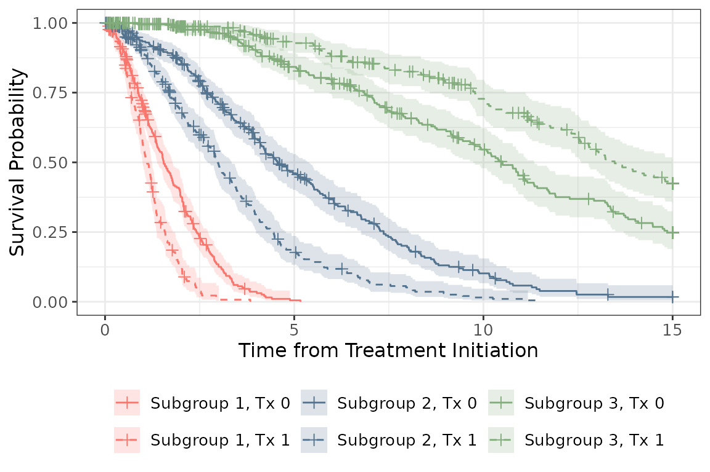
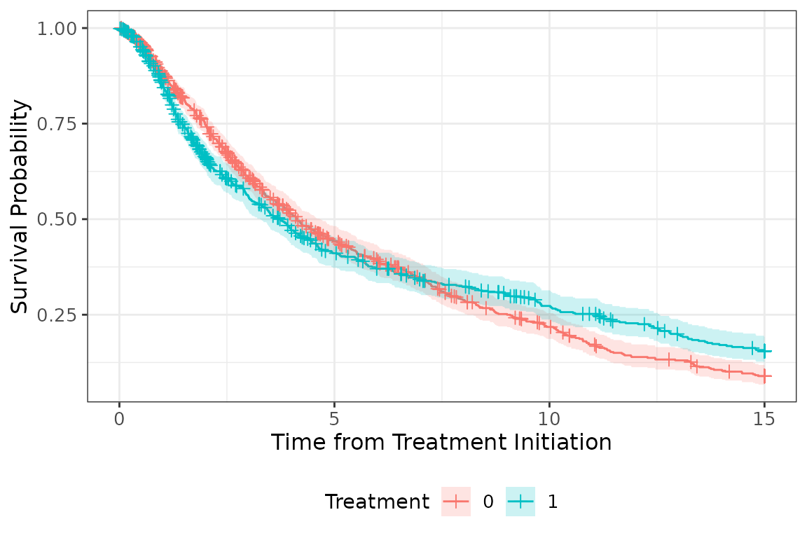

Fitting Finite Mixture Models for Time-to-Event Endpoints
Source:vignettes/FMM_for_TTE_Endpoints.Rmd
FMM_for_TTE_Endpoints.Rmd
library(survFMM)
library(tibble)
library(tidyr)
library(dplyr)
library(gtsummary)
library(ggsurvfit)Finite Mixture Models
Finite mixture models were developed to model continuous or discrete values arising from separate latent distributions. We have implemented an adaptation of this modeling approach for time-to-event endpoints, which require additional consideration due to observations that are censored and therefore do not have an observed event time.
The {survFMM} package fits adaptations of the finite mixture model for time-to-event endpoints.
Example
We will use the simulated dataset provided with the {survFMM}
package, sim_data. This dataset includes data on 1500
observations arising from three latent subgroups. In practice, the
values for latent_subgroup are unknown. For the purposes of
the examples, we will evaluate 3 subgroups. The number of subgroups may
be pre-specified or evaluated using AIC or BIC (not currently computed
as part of survFMM, but may be a future enhancement).
We will fit both an IPCW-FMM and an AFT-FMM. All weights have already been computed as part of the simulated dataset. Starting values for the outcome model parameters will be based on fitting a single AFT model to the data and adding random noise to the parameters. We will repeat the initialization 10 times; the initialization resulting in the largest log-likelihood is selected for the final estimates.
The outcome model is fit with only the treatment covariate since both models apply IPTW (required to be pre-computed and specified in the function call; they are not computed as part of survFMM).
The latent subgroup membership model is identical for both the
IPCW-FMM and the AFT-FMM, and is a multinomial logistic regression model
with covariates covariate_sim_normal and
covariate_sim_binary1.
We will allow the model to converge when the change in log-likelihood is less than 0.001 (default) or fewer than 3% of observations change latent subgroup.
Summary of Simulated Data
In the simulated data, 30% of all observations are censored (70% have an event).
tbl_summary(sim_data,
by = latent_subgroup,
include = c(tx, covariate_sim_normal, covariate_sim_binary1,
event_status)) %>%
bold_labels() %>%
modify_header(all_stat_cols() ~ "**Subgroup {level}** \nN = {n} ({round(100*p)}%)") %>%
add_overall()| Characteristic |
Overall N = 1,5001 |
Subgroup 1 N = 430 (29%)1 |
Subgroup 2 N = 542 (36%)1 |
Subgroup 3 N = 528 (35%)1 |
|---|---|---|---|---|
| tx | 687 (46%) | 168 (39%) | 261 (48%) | 258 (49%) |
| covariate_sim_normal | -0.01 (-0.73, 0.65) | -0.56 (-1.22, 0.07) | 0.24 (-0.43, 0.81) | 0.28 (-0.44, 0.89) |
| covariate_sim_binary1 | 759 (51%) | 234 (54%) | 253 (47%) | 272 (52%) |
| event_status | 1,054 (70%) | 390 (91%) | 435 (80%) | 229 (43%) |
| 1 n (%); Median (Q1, Q3) | ||||
# KM curve by treatment and latent subgroup
km_tx_subgroup <- survfit2(Surv(time_to_event_days, event_status) ~ latent_subgroup + tx,
data = sim_data %>%
mutate(latent_subgroup = paste0("Subgroup ", latent_subgroup),
tx = paste0("Tx ", tx)))
ggsurvfit(km_tx_subgroup, linetype_aes = TRUE) +
add_confidence_interval() +
add_censor_mark() +
scale_color_manual(values = c('#F8766D', '#F8766D',
'#54738E', '#54738E',
'#82AC7C', '#82AC7C'
)) +
scale_fill_manual(values = c('#F8766D', '#F8766D',
'#54738E', '#54738E',
'#82AC7C', '#82AC7C')) +
scale_linetype_manual(values = rep(c(1, 2), 3)) +
labs(x = "Time from Treatment Initiation")
However, since latent subgroup membership is not known in practice, if we were to compare survival across treatment arms, we would observe the following:
# KM curve by treatment
km_tx <- survfit2(Surv(time_to_event_days, event_status) ~ tx,
data = sim_data)
ggsurvfit(km_tx) +
add_confidence_interval() +
add_censor_mark() +
labs(color = "Treatment",
fill = "Treatment",
x = "Time from Treatment Initiation")
Fit FMMs
We can start with the inverse probability of censoring weighted version of the FMM (IPCW-FMM), which is applied only among individuals with an event and weighted by the probability that they are included (i.e., not censored).
set.seed(1234)
ex_ipcw_fmm <- survFMM(
model = "ipcw-fmm",
input_df = sim_data,
weights = "iptw_ipcw_trim97",
outc_distribution = "weibull",
outc_model_time = "time_to_event_days",
outc_model_status = "event_status",
outc_model_covars = "tx",
k = 3,
starting_values_type = "single_survreg",
starting_values_window = 1,
covariates_subgroup_model = c("covariate_sim_normal",
"covariate_sim_binary1"),
conv_pct_criteria = 0.03,
n_inits = 25
)We can now fit the same model, but rather than fit the model among events and apply IPCW, we can utilize all observations by fitting a mixture of accelerated failure time models (AFT-FMM).
The only differences between the above and below calls to
survFMM() are the model and the weights; the IPCW-FMM
requires IPTW*IPCW, whereas the AFT-FMM only requires IPTW.
set.seed(1234)
ex_aft_fmm <- survFMM(
model = "AFT-FMM",
input_df = sim_data,
weights = "iptw_trim97",
outc_distribution = "weibull",
outc_model_time = "time_to_event_days",
outc_model_status = "event_status",
outc_model_covars = "tx",
k = 3,
starting_values_type = "single_survreg",
starting_values_window = 1,
covariates_subgroup_model = c("covariate_sim_normal",
"covariate_sim_binary1"),
conv_pct_criteria = 0.03,
n_inits = 25
)FMM Results
Note: The subgroup labels assigned assigned by the IPCW-FMM and AFT-FMM may vary (i.e., what is called “Subgroup 1” by the IPCW-FMM may be called “Subgroup 2” by the AFT-FMM).
Below are all of the list elements returned by survFMM.
starting_valuesis a dataframe of the starting values used for the final initial partition.final_outcome_model_1-kare the outcome model objects for each subgroup, for subgroups 1-k.final_outcome_model_tidy_1-kare dataframes of the final outcome model estimates for each subgroup, for subgroups 1 to k.final_outcome_model_cov_mtx_1-kare dataframes of the final outcome model covariance matrices for each subgroup, for subgroups 1 to k.subgroup_assnis a dataframe structured as 1 row/observation including the subgroup assigned based on the largest posterior probability (assn_subgroup), as well as the posterior probabilities of membership in each subgroup (posterior_prob1-k).final_dfis a dataframe structured as 1 row/observation/potential subgroup. It includes the posterior probability of subgroup membership for each subgroup, in long format (posterior_prob). Users may filter onk = assn_subgroupto get 1 row/observation/assigned subgroup for analysis.log_likelihood_valuesis a vector of the log likelihood values across iterations of the EM algorithm.convergence_status,convergence_message, andconvergence_iterare vectors indicating whether the algorithm converged (0 = did not converge, 1 = converged), the convergence criteria that was met (log-likelihood or percent of subjects changing subgroup) or reason for lack of convergence, and the iteration at which the algorithm stopped.
str(ex_aft_fmm, 1)
#> List of 20
#> $ starting_values : tibble [1 × 9] (S3: tbl_df/tbl/data.frame)
#> $ final_outcome_model_1 :List of 17
#> ..- attr(*, "class")= chr "survreg"
#> $ final_outcome_model_2 :List of 17
#> ..- attr(*, "class")= chr "survreg"
#> $ final_outcome_model_3 :List of 17
#> ..- attr(*, "class")= chr "survreg"
#> $ final_outcome_model_tidy_1 : tibble [3 × 7] (S3: tbl_df/tbl/data.frame)
#> $ final_outcome_model_tidy_2 : tibble [3 × 7] (S3: tbl_df/tbl/data.frame)
#> $ final_outcome_model_tidy_3 : tibble [3 × 7] (S3: tbl_df/tbl/data.frame)
#> $ final_outcome_model_cov_mtx_1: tibble [3 × 3] (S3: tbl_df/tbl/data.frame)
#> $ final_outcome_model_cov_mtx_2: tibble [3 × 3] (S3: tbl_df/tbl/data.frame)
#> $ final_outcome_model_cov_mtx_3: tibble [3 × 3] (S3: tbl_df/tbl/data.frame)
#> $ final_subgroup_model :List of 26
#> ..- attr(*, "class")= chr [1:2] "multinom" "nnet"
#> $ final_subgroup_model_tidy : tibble [6 × 8] (S3: tbl_df/tbl/data.frame)
#> $ final_subgroup_model_cov_mtx : num [1:6, 1:6] 7.61e-03 -5.77e-04 -7.55e-03 4.29e-03 -4.97e-05 ...
#> $ subgroup_assn : tibble [1,500 × 6] (S3: tbl_df/tbl/data.frame)
#> $ final_df : tibble [4,500 × 21] (S3: tbl_df/tbl/data.frame)
#> $ log_likelihood_values : num [1:5] -3030 -2968 -2956 -2950 -2948
#> $ convergence_status : num 1
#> $ convergence_message : chr "Algorithm converged (<=3% records changed assigned subgroup)."
#> $ convergence_iter : int 5
#> $ ests :'data.frame': 90 obs. of 14 variables:Subgroup Membership
Note: The subgroup labels assigned assigned by the IPCW-FMM and AFT-FMM may vary (i.e., what is called “Subgroup 1” by the IPCW-FMM may be called “Subgroup 2” by the AFT-FMM).
We can first describe the number of patients assigned to each subgroup.
tbl_merge(
list(
tbl_summary(ex_ipcw_fmm$subgroup_assn,
include = assn_subgroup
),
tbl_summary(ex_aft_fmm$subgroup_assn,
include = assn_subgroup
)
),
tab_spanner = c("**IPCW-FMM**", "**AFT-FMM**")
) %>%
bold_labels()| Characteristic |
IPCW-FMM
|
AFT-FMM
|
|---|---|---|
| N = 1,0541 | N = 1,5001 | |
| assn_subgroup | ||
| 1 | 419 (40%) | 359 (24%) |
| 2 | 160 (15%) | 691 (46%) |
| 3 | 475 (45%) | 450 (30%) |
| 1 n (%) | ||
We can then explore the extent to which each feature of interest contributed to subgroup membership by reviewing the latent subgroup membership model.
bind_rows(
ex_ipcw_fmm$final_subgroup_model_tidy %>%
filter(!(term %in% c("(Intercept)", "Log(scale)"))) %>%
mutate(model = "IPCW-FMM",
across(.cols = c(estimate, conf.low, conf.high),
.fns = ~round(exp(.x), 2)),
p.value = format.pval(p.value, digits = 2, eps = 0.001)) %>%
select(model, y.level, term, `Odds Ratio` = estimate, conf.low, conf.high, p.value) ,
ex_aft_fmm$final_subgroup_model_tidy %>%
filter(!(term %in% c("(Intercept)", "Log(scale)"))) %>%
mutate(model = "AFT-FMM",
across(.cols = c(estimate, conf.low, conf.high),
.fns = ~round(exp(.x), 2)),
p.value = format.pval(p.value, digits = 2, eps = 0.001)) %>%
select(model, y.level, term, `Odds Ratio` = estimate, conf.low, conf.high, p.value)) %>%
group_by(model) %>%
gt::gt() %>%
gt::tab_style(
style = gt::cell_text(weight = "bold"),
locations = gt::cells_row_groups(groups = everything())
)| y.level | term | Odds Ratio | conf.low | conf.high | p.value |
|---|---|---|---|---|---|
| IPCW-FMM | |||||
| 2 | covariate_sim_normal | 1.37 | 1.13 | 1.65 | 0.0011 |
| 2 | covariate_sim_binary1 | 1.16 | 0.82 | 1.63 | 0.4089 |
| 3 | covariate_sim_normal | 0.48 | 0.41 | 0.56 | <0.001 |
| 3 | covariate_sim_binary1 | 0.96 | 0.73 | 1.27 | 0.7819 |
| AFT-FMM | |||||
| 2 | covariate_sim_normal | 1.31 | 1.16 | 1.49 | <0.001 |
| 2 | covariate_sim_binary1 | 0.86 | 0.68 | 1.09 | 0.20 |
| 3 | covariate_sim_normal | 0.56 | 0.48 | 0.65 | <0.001 |
| 3 | covariate_sim_binary1 | 0.84 | 0.64 | 1.11 | 0.23 |
Additionally, we can explore whether patient characteristics vary by subgroup assignment.
tbl_stack(
list(
ex_ipcw_fmm$final_df %>%
# get one row per observation
filter(k == assn_subgroup) %>%
tbl_summary(by = assn_subgroup,
include = c(covariate_sim_normal,
covariate_sim_binary1)) %>%
bold_labels() %>%
modify_header(all_stat_cols() ~ "**Subgroup {level}**"),
ex_aft_fmm$final_df %>%
# get one row per observation
filter(k == assn_subgroup) %>%
tbl_summary(by = assn_subgroup,
include = c(covariate_sim_normal,
covariate_sim_binary1)) %>%
bold_labels() %>%
modify_header(all_stat_cols() ~ "**Subgroup {level}**")
),
group_header = c("IPCW-FMM", "AFT-FMM")
) %>%
bold_labels() %>% as_gt() %>%
gt::tab_style(
style = gt::cell_text(weight = "bold"),
locations = gt::cells_row_groups(groups = everything())
)| Characteristic | Subgroup 11 | Subgroup 21 | Subgroup 31 |
|---|---|---|---|
| IPCW-FMM | |||
| covariate_sim_normal | 0.33 (-0.31, 0.87) | 0.53 (-0.25, 1.00) | -0.52 (-1.19, 0.10) |
| covariate_sim_binary1 | 208 (50%) | 88 (55%) | 246 (52%) |
| AFT-FMM | |||
| covariate_sim_normal | 0.37 (-0.36, 0.87) | 0.28 (-0.41, 0.91) | -0.66 (-1.33, -0.08) |
| covariate_sim_binary1 | 202 (56%) | 338 (49%) | 219 (49%) |
| 1 Median (Q1, Q3); n (%) | |||
Treatment effect heterogeneity
Once subgroups are obtained, we can examine the treatment effects within each subgroup and whether heterogeneity is present:
# custom tidier to exponentiate model coefficients
custom_tidier <- function(x, ...) broom::tidy(x, ...) %>%
dplyr::filter(!(.data$term %in% c("(Intercept)", "Log(scale)"))) %>%
mutate(across(all_of(c("estimate", "conf.low", "conf.high")), ~exp(.)))
# table of outcome models from IPCW-FMM
tbl_outc_ipcw_fmm <- tbl_merge(
list(
tbl_regression(ex_ipcw_fmm$final_outcome_model_1, tidy_fun = custom_tidier),
tbl_regression(ex_ipcw_fmm$final_outcome_model_2, tidy_fun = custom_tidier),
tbl_regression(ex_ipcw_fmm$final_outcome_model_3, tidy_fun = custom_tidier)
),
tab_spanner = c("**Subgroup 1**", "**Subgroup 2**", "**Subgroup 3**")
)
# table of outcome models from AFT-FMM
tbl_outc_aft_fmm <- tbl_merge(
list(
tbl_regression(ex_aft_fmm$final_outcome_model_1, tidy_fun = custom_tidier),
tbl_regression(ex_aft_fmm$final_outcome_model_2, tidy_fun = custom_tidier),
tbl_regression(ex_aft_fmm$final_outcome_model_3, tidy_fun = custom_tidier)
),
tab_spanner = c("**Subgroup 1**", "**Subgroup 2**", "**Subgroup 3**")
)
# combine tables
tbl_stack(list(tbl_outc_ipcw_fmm, tbl_outc_aft_fmm),
group_header = c("IPCW-FMM", "AFT-FMM")) %>%
as_gt() %>%
gt::tab_style(
style = gt::cell_text(weight = "bold"),
locations = gt::cells_row_groups(groups = everything())
)| Characteristic |
Subgroup 1
|
Subgroup 2
|
Subgroup 3
|
||||||
|---|---|---|---|---|---|---|---|---|---|
| Beta | 95% CI | p-value | Beta | 95% CI | p-value | Beta | 95% CI | p-value | |
| IPCW-FMM | |||||||||
| tx | 0.66 | 0.62, 0.70 | <0.001 | 1.0 | 0.97, 1.1 | 0.4 | 0.65 | 0.61, 0.70 | <0.001 |
| AFT-FMM | |||||||||
| tx | 0.60 | 0.56, 0.65 | <0.001 | 1.4 | 1.2, 1.5 | <0.001 | 0.71 | 0.66, 0.76 | <0.001 |
| Abbreviation: CI = Confidence Interval | |||||||||
To formally test for treatment effect heterogeneity, a joint test (not shown) can be performed to test
where corresponds to the treatment term in the outcome model for latent subgroup .
The variance and covariance of treatment terms across outcome models can be estimating by bootstrapping: sampling the data with replacement and fitting the FMM repeatedly to then estimate the variance and covariance of the outcome model treatment terms across the bootstrap replicates.
Tips
Due to the random initialization of starting values and initial partitions of patients into latent subgroups as part of the EM algorithm, setting a seed prior to calling
survFMM()is required to ensure full reproducibility.It is recommended that
n_initbe at least 10 or higher. This parameter controls the number of random initial partitions and starting values used for the algorithm initiation, where the initialization resulting in the largest log-likelihood is selected for the final model estimates; higher values ofn_initresult in more stable estimation.With a small proportion of censored patients, the IPCW-FMM and AFT-FMM may result in similar estimates. With higher proportions of censored patients, the AFT-FMM is recommended so that observations are directly incorporated into the model estimation and estimation of inverse probability of censoring weights is not required.
The labels applied to each subgroup (e.g., “Subgroup 1”, “Subgroup 2”, “Subgroup 3”) are arbitrary, and may vary across times the algorithm is run. For example, in one run of the algorithm, subgroup 1 may have the smallest treatment effect and in another run it may have the largest treatment effect. To ensure comparably labeled subgroups across multiple runs of the models, the
correct_label_switchingfunction can be used.